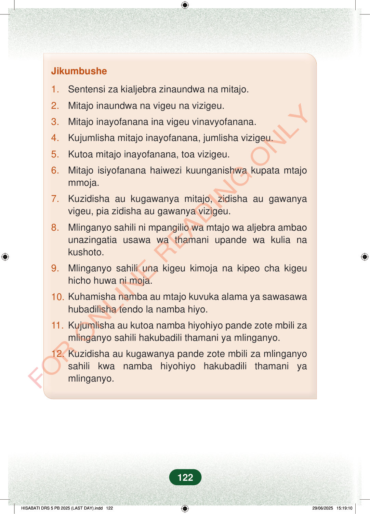

Jikumbushe1.Sentensi za kialjebra zinaundwa na mitajo.2.Mitajo inaundwa na vigeu na vizigeu.3.Mitajo inayofanana ina vigeu vinavyofanana.4.Kujumlisha mitajo inayofanana, jumlisha vizigeu.5.Kutoa mitajo inayofanana, toa vizigeu.6.Mitajo isiyofanana haiwezi kuunganishwa kupata mtajommoja.7.Kuzidisha au kugawanya mitajo, zidisha au gawanyavigeu, pia zidisha au gawanya vizigeu.8.Mlinganyo sahili ni mpangilio wa mtajo wa aljebra ambaounazingatia usawa wa thamani upande wa kulia nakushoto.9.Mlinganyo sahili una kigeu kimoja na kipeo cha kigeuhicho huwa ni moja.10.Kuhamisha namba au mtajo kuvuka alama ya sawasawahubadilisha tendo la namba hiyo.11.Kujumlisha au kutoa namba hiyohiyo pande zote mbili zamlinganyo sahili hakubadili thamani ya mlinganyo.12.Kuzidisha au kugawanya pande zote mbili za mlinganyosahili kwa namba hiyohiyo hakubadili thamani yamlinganyo.122
Jikumbushe
1. Sentensi za kialjebra zinaundwa na mitajo.
2. Mitajo inaundwa na vigeu na vizigeu.
3. Mitajo inayofanana ina vigeu vinavyofanana.
4. Kujumlisha mitajo inayofanana, jumlisha vizigeu.
5. Kutoa mitajo inayofanana, toa vizigeu.
6. Mitajo isiyofanana haiwezi kuunganishwa kupata mtajo mmoja.
7. Kuzidisha au kugawanya mitajo, zidisha au gawanya vigeu, pia zidisha au gawanya vizigeu.
8. Mlinganyo sahili ni mpangilio wa mtajo wa aljebra ambao unazingatia usawa wa thamani upande wa kulia na kushoto.
9. Mlinganyo sahili una kigeu kimoja na kipeo cha kigeu hicho huwa ni moja.
10. Kuhamisha namba au mtajo kuvuka alama ya sawasawa hubadilisha tendo la namba hiyo.
11. Kujumlisha au kutoa namba hiyohiyo pande zote mbili za mlinganyo sahili hakubadili thamani ya mlinganyo.
12. Kuzidisha au kugawanya pande zote mbili za mlinganyo sahili kwa namba hiyohiyo hakubadili thamani ya mlinganyo.
122
Jikumbushe1.Sentensi za kialjebra zinaundwa na mitajo.2.Mitajo inaundwa na vigeu na vizigeu.3.Mitajo inayofanana ina vigeu vinavyofanana.4.Kujumlisha mitajo inayofanana, jumlisha vizigeu.5.Kutoa mitajo inayofanana, toa vizigeu.6.Mitajo isiyofanana haiwezi kuunganishwa kupata mtajo mmoja.7.Kuzidisha au kugawanya mitajo, zidisha au gawanya vigeu, pia zidisha au gawanya vizigeu.8.Mlinganyo sahili ni mpangilio wa mtajo wa aljebra ambao unazingatia usawa wa thamani upande wa kulia na kushoto.9.Mlinganyo sahili una kigeu kimoja na kipeo cha kigeu hicho huwa ni moja.10.Kuhamisha namba au mtajo kuvuka alama ya sawasawa hubadilisha tendo la namba hiyo.11.Kujumlisha au kutoa namba hiyohiyo pande zote mbili za mlinganyo sahili hakubadili thamani ya mlinganyo.12.Kuzidisha au kugawanya pande zote mbili za mlinganyo sahili kwa namba hiyohiyo hakubadili thamani ya mlinganyo.FOR ONLINE READING ONLY